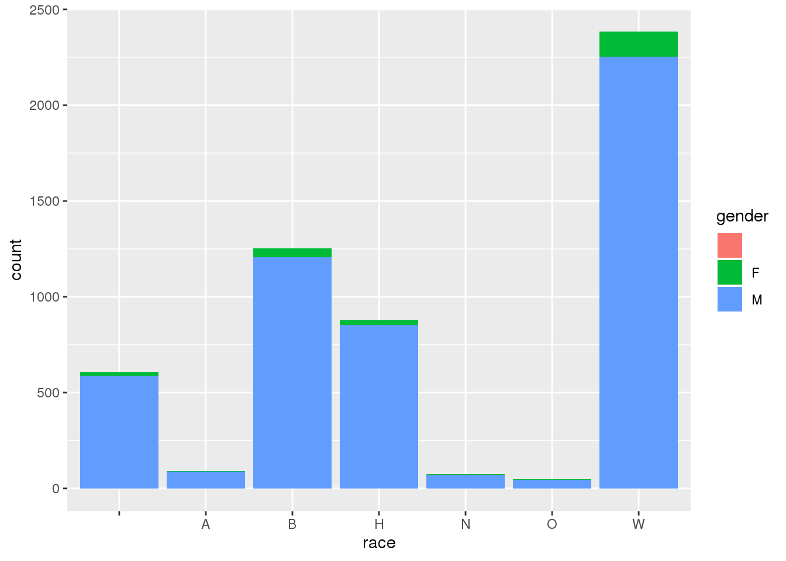
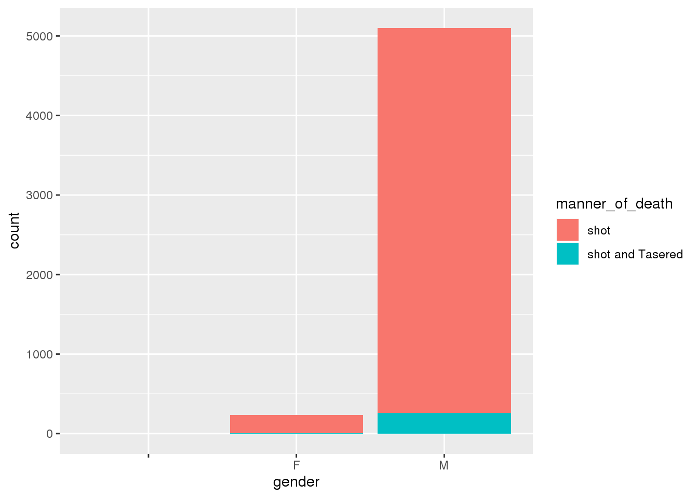

library(here)
library(ggplot2)
library(tidyverse)
library(readxl)
library(tinytex)
library(fivethirtyeight)
knitr::opts_chunk$set(echo = FALSE, tidy = TRUE)
police1 <- read.csv(file = here::here("police_data", "clean_data.csv"))
police2 <- read.csv(file = here::here("police_data", "police_killings.csv"))
police3 <- read.csv(file = here::here("police_data", "police-locals.csv"))
police4 <- read.csv(file = here::here("police_data", "fatal-police-shootings-data.csv"))
head(police1)## person
## 1 Constable Darius Quimby
## 2 Sheriff Cornelius Hogeboom
## 3 Deputy Sheriff Isaac Smith
## 4 Marshal Robert Forsyth
## 5 Sheriff Robert Maxwell
## 6 High Sheriff John Caldwell Cook
## dept
## 1 Albany County Constable's Office, NY
## 2 Columbia County Sheriff's Office, NY
## 3 Westchester County Sheriff's Department, NY
## 4 United States Department of Justice - United States Marshals Service, US
## 5 Greenville County Sheriff's Office, SC
## 6 Mecklenburg County Sheriff's Office, NC
## eow cause cause_short
## 1 EOW: Monday, January 3, 1791 Cause of Death: Gunfire Gunfire
## 2 EOW: Saturday, October 22, 1791 Cause of Death: Gunfire Gunfire
## 3 EOW: Thursday, May 17, 1792 Cause of Death: Gunfire Gunfire
## 4 EOW: Saturday, January 11, 1794 Cause of Death: Gunfire Gunfire
## 5 EOW: Sunday, November 12, 1797 Cause of Death: Gunfire Gunfire
## 6 EOW: Tuesday, October 16, 1804 Cause of Death: Gunfire Gunfire
## date year canine
## 1 1791-01-03 1791 FALSE
## 2 1791-10-22 1791 FALSE
## 3 1792-05-17 1792 FALSE
## 4 1794-01-11 1794 FALSE
## 5 1797-11-12 1797 FALSE
## 6 1804-10-16 1804 FALSE
## dept_name state
## 1 Albany County Constable's Office NY
## 2 Columbia County Sheriff's Office NY
## 3 Westchester County Sheriff's Department NY
## 4 United States Department of Justice - United States Marshals Service US
## 5 Greenville County Sheriff's Office SC
## 6 Mecklenburg County Sheriff's Office NC## name age gender raceethnicity month day year
## 1 A'donte Washington 16 Male Black February 23 2015
## 2 Aaron Rutledge 27 Male White April 2 2015
## 3 Aaron Siler 26 Male White March 14 2015
## 4 Aaron Valdez 25 Male Hispanic/Latino March 11 2015
## 5 Adam Jovicic 29 Male White March 19 2015
## 6 Adam Reinhart 29 Male White March 7 2015
## streetaddress city state latitude longitude state_fp
## 1 Clearview Ln Millbrook AL 32.52958 -86.36283 1
## 2 300 block Iris Park Dr Pineville LA 31.32174 -92.43486 22
## 3 22nd Ave and 56th St Kenosha WI 42.58356 -87.83571 55
## 4 3000 Seminole Ave South Gate CA 33.93930 -118.21946 6
## 5 364 Hiwood Ave Munroe Falls OH 41.14857 -81.42988 39
## 6 18th St and Palm Ln Phoenix AZ 33.46938 -112.04332 4
## county_fp tract_ce geo_id county_id namelsad
## 1 51 30902 1051030902 1051 Census Tract 309.02
## 2 79 11700 22079011700 22079 Census Tract 117
## 3 59 1200 55059001200 55059 Census Tract 12
## 4 37 535607 6037535607 6037 Census Tract 5356.07
## 5 153 530800 39153530800 39153 Census Tract 5308
## 6 13 111602 4013111602 4013 Census Tract 1116.02
## lawenforcementagency cause armed pop share_white share_black
## 1 Millbrook Police Department Gunshot No 3779 60.5 30.5
## 2 Rapides Parish Sheriff's Office Gunshot No 2769 53.8 36.2
## 3 Kenosha Police Department Gunshot No 4079 73.8 7.7
## 4 South Gate Police Department Gunshot Firearm 4343 1.2 0.6
## 5 Kent Police Department Gunshot No 6809 92.5 1.4
## 6 Phoenix Police Department Gunshot No 4682 7 7.7
## share_hispanic p_income h_income county_income comp_income county_bucket
## 1 5.6 28375 51367 54766 0.9379359 3
## 2 0.5 14678 27972 40930 0.6834107 2
## 3 16.8 25286 45365 54930 0.8258693 2
## 4 98.8 17194 48295 55909 0.8638144 3
## 5 1.7 33954 68785 49669 1.3848678 5
## 6 79 15523 20833 53596 0.3887044 1
## nat_bucket pov urate college
## 1 3 14.1 0.09768638 0.16850951
## 2 1 28.8 0.06572379 0.11140236
## 3 3 14.6 0.16629314 0.14731227
## 4 3 11.7 0.12482727 0.05013293
## 5 4 1.9 0.06354983 0.40395421
## 6 1 58 0.07365145 0.10295519
## id name date manner_of_death armed age gender race
## 1 3 Tim Elliot 2015-01-02 shot gun 53 M A
## 2 4 Lewis Lee Lembke 2015-01-02 shot gun 47 M W
## 3 5 John Paul Quintero 2015-01-03 shot and Tasered unarmed 23 M H
## 4 8 Matthew Hoffman 2015-01-04 shot toy weapon 32 M W
## 5 9 Michael Rodriguez 2015-01-04 shot nail gun 39 M H
## 6 11 Kenneth Joe Brown 2015-01-04 shot gun 18 M W
## city state signs_of_mental_illness threat_level flee
## 1 Shelton WA True attack Not fleeing
## 2 Aloha OR False attack Not fleeing
## 3 Wichita KS False other Not fleeing
## 4 San Francisco CA True attack Not fleeing
## 5 Evans CO False attack Not fleeing
## 6 Guthrie OK False attack Not fleeing
## body_camera
## 1 False
## 2 False
## 3 False
## 4 False
## 5 False
## 6 False
## id name date manner_of_death armed age gender race
## 1 3 Tim Elliot 2015-01-02 shot gun 53 M A
## 2 4 Lewis Lee Lembke 2015-01-02 shot gun 47 M W
## 3 5 John Paul Quintero 2015-01-03 shot and Tasered unarmed 23 M H
## 4 8 Matthew Hoffman 2015-01-04 shot toy weapon 32 M W
## 5 9 Michael Rodriguez 2015-01-04 shot nail gun 39 M H
## 6 11 Kenneth Joe Brown 2015-01-04 shot gun 18 M W
## city state signs_of_mental_illness threat_level flee
## 1 Shelton WA True attack Not fleeing
## 2 Aloha OR False attack Not fleeing
## 3 Wichita KS False other Not fleeing
## 4 San Francisco CA True attack Not fleeing
## 5 Evans CO False attack Not fleeing
## 6 Guthrie OK False attack Not fleeing
## body_camera
## 1 False
## 2 False
## 3 False
## 4 False
## 5 False
## 6 False